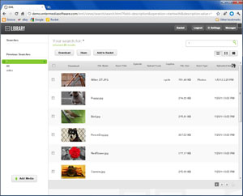

Review search results in your favorite view. Use EnterMedia the way you want to. The search results come back in either list or gallery view, or you can dive into a single asset’s details. Controlling your view helps make sorting through results quick.
Automatically keep track of your previous searches. Every time you search, EnterMedia automatically updates your query to the sidebar for later access. You then have options to save and refine your searches, so you can find the same files today, as you found yesterday, without starting over.
Refine saved searches to pinpoint the files you want. By refining your search to a specific category or metadata field you can return the specific files your are looking for. We built the search function to give you extra power, without sacrificing usability.
Organize with catalogs, categories, tags, and custom fields. Find the media you are searching for quickly with EnterMedia's robust metadata capabilities. Each organization is unique, and there are often diverse needs within separate departments as well. The power of EnterMedia lies in the ability to fully customize metadata fields no matter what your work-flow entails.